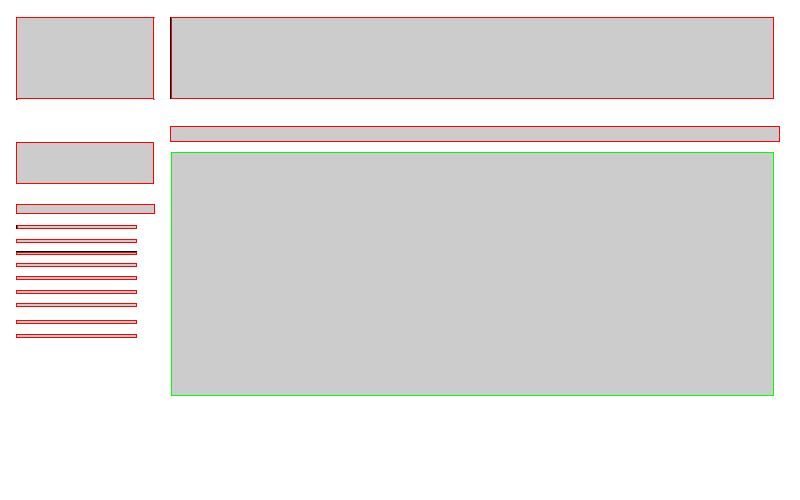

How I created my website.
Website Brainstorm
Wireframes


The homepages I had made
Discussion
Using Fireworks
Pros
- Allows for easier customization because Fireworks is easier to use
- It is easier to create a wireframe in a quicker time
- There are more fonts to use, which can help with creation and making it look more visually appealing to the audience
- We can quickly include links using the slice tool
Cons
- Everything is an image, so editing it after publishing it is tedious
- Since everything is an image, you can't search it up because it displays as an image instead of text
- It's hard to edit all of the subpages at once
Using Dreamweaver
Pros
- Things show up as text instead of showing up as an image, so it can easily be changed
- With a lot of different subpages, we can create a template so we can quickly edit all the subpages at once
- Using Dreamweaver instead of Fireworks allows for usage of CSS, which isn't available in Fireworks
Cons
- Sometimes the entire format of the page gets messed up if you move images and other objects
- Operating Dreamweaver is more difficult compared to using Fireworks
Creating Templates
- This is the template we created for our website
- We decided to make my template's editable region in the center because I want my content to be focused on the middle of the page. It is also easier for the viewer to focus on the content
- We decided to keep the siderbars and header for each page, this allows the viewer to be able to quickly browse between different subpages

Review
MAP
- For the Community Service Club to be able to show the students of AIS what community service events are available
- For the students of AIS to be able to sign up for Community Service events on the internet instead of having to search for the signup sheet in school
- For the students of AIS to put up how many hours of Community Service they have
- For the students to understand more about the Community Service club
Original Objectives
- Our original objective for this website was for the Community Service Club to be able to share their information about different Community Service events
- We also want them to be able to attract more people to sign up for Community Service
- We completed this by creating a sign up sheet, this will allow more people to sign up for Community Service events.
Feel and Message
- We want our website to not feel overly complicated. A simple design and a theme with just one main colour will allow the audience to focus on the main purpose of this website
- We want our website to be simple so that our audience can focus on filling out the information and obtaining information about Community Service
- Since our website is a page for signing up, we want the main focus of our website to be the signing up function.
- We want our smooth and easy website to lead people into signing up for different Community Service events.
Template

 This is the original template I created for the group
Although I created this template, our group decided to use a different template, because my template featured a sidebar that was too detailed
My group thought that a pressable link for each different event was overkill and wasn't necessary, since there wasn't that much content for each different event
We decided to get rid of my design, which featured a sidebar that showed all of the events.
The second image is the template we decided to use as a group
This is the original template I created for the group
Although I created this template, our group decided to use a different template, because my template featured a sidebar that was too detailed
My group thought that a pressable link for each different event was overkill and wasn't necessary, since there wasn't that much content for each different event
We decided to get rid of my design, which featured a sidebar that showed all of the events.
The second image is the template we decided to use as a group
Subpages
- These are the subpages our group created
- The subpages we have are:Abous Us, Service Sheets, Service Events, and Gallery(Pictures)
- About Page